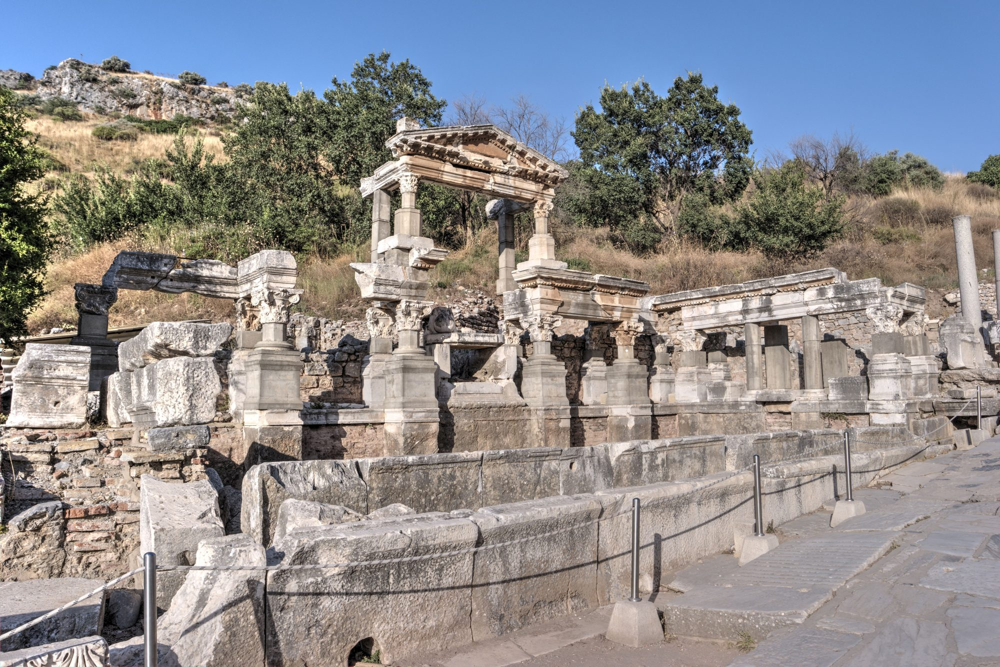

Overview
The Trajan Fountain at Ephesus combined imperial propaganda, sculpture, and water engineering into a monumental civic structure.
Location
Ephesus, Turkey

The Trajan Fountain at Ephesus combined imperial propaganda, sculpture, and water engineering into a monumental civic structure.
Ephesus, Turkey